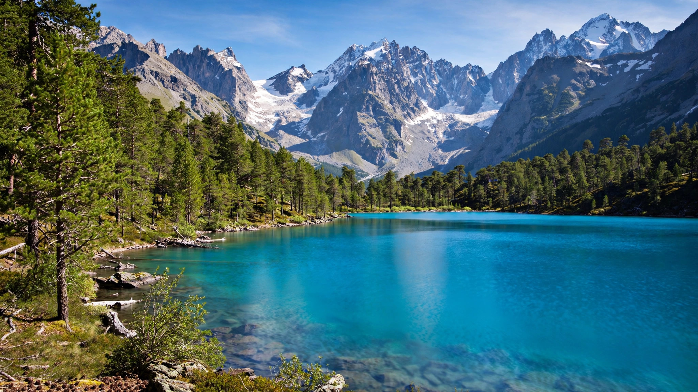
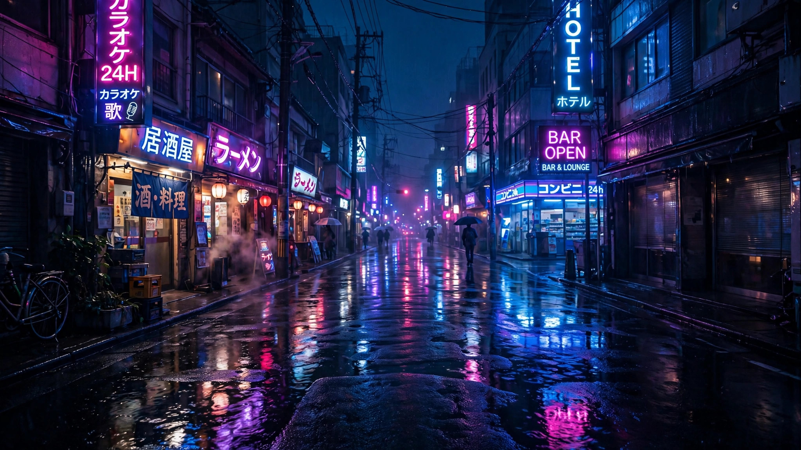

Self-initiated · Computational photography
Lumen
An exposure-triangle simulator rendered live on real photographs. Drag aperture, shutter speed and ISO — watch depth of field, motion blur, grain and exposure respond like a real camera.
Under the hood
Real math, honest shortcuts
Exposure follows the genuine exposure-triangle equations. The optical effects are stylized approximations — good enough to learn on, honest enough to say so.
01
Exposure triangle
Light in stops: log₂(t) − 2·log₂(f/1.4) + log₂(ISO/100). Each scene has a reference exposure; the meter shows your deviation in EV, exactly like a camera's light meter.
02
Depth of field
Rendered as a tilt-shift blur that falls off toward the top and bottom of the frame. Wide apertures melt the edges; f/16 keeps everything crisp. A stylized stand-in for true optical bokeh.
03
Motion & grain
Drifting light particles leave trails proportional to shutter time — 1/4000s freezes them, 1s turns them silky. Grain is procedural luminance noise scaled with ISO, shimmering like real film.
The plates
Three scenes, three moods
Every frame in the simulator above starts from one of these plates.


